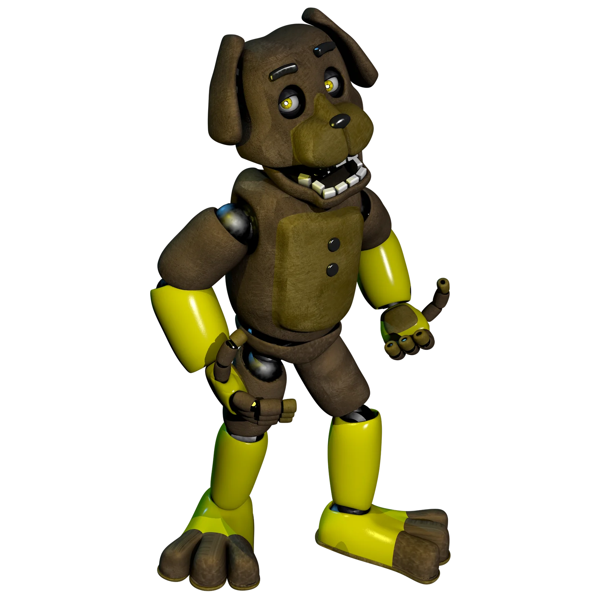
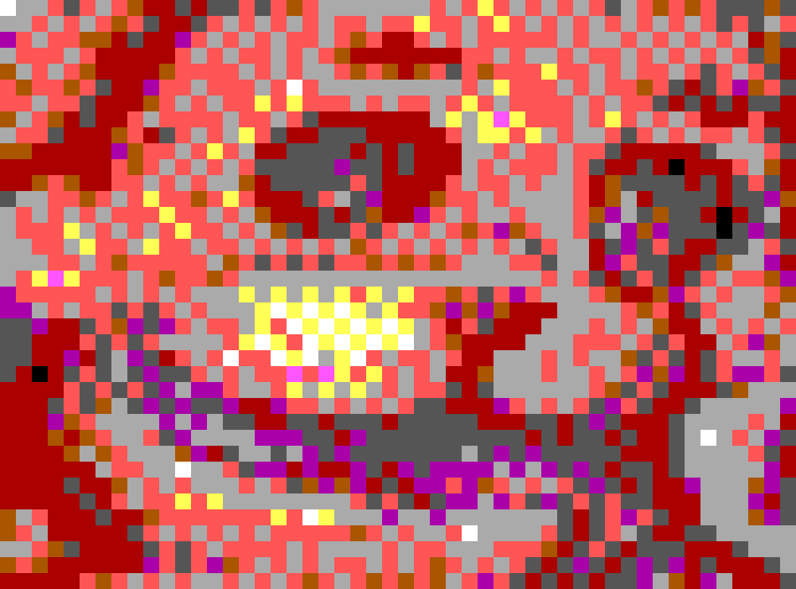
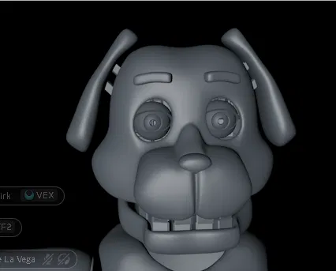
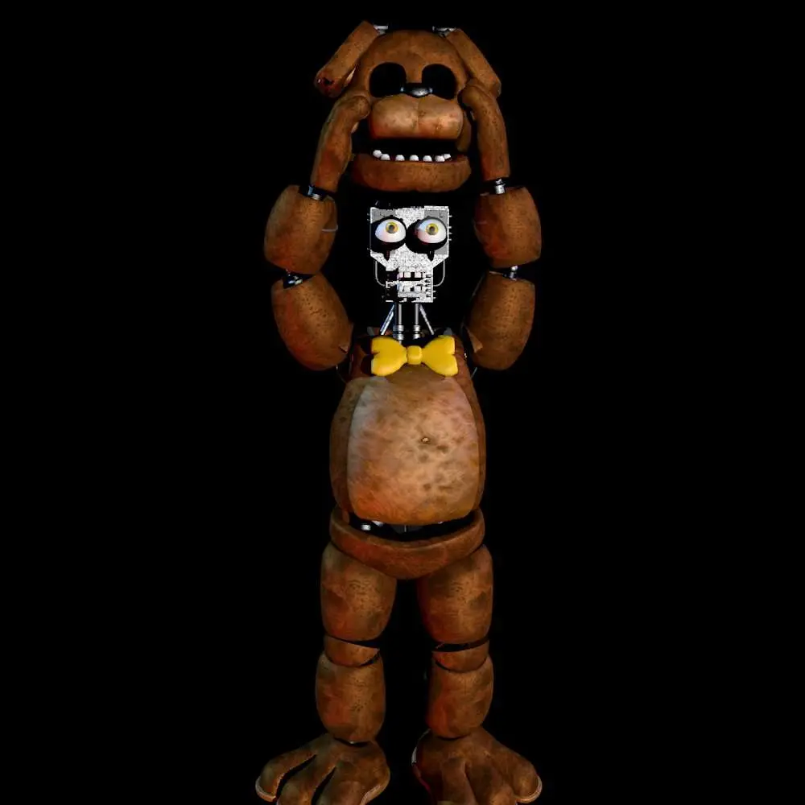
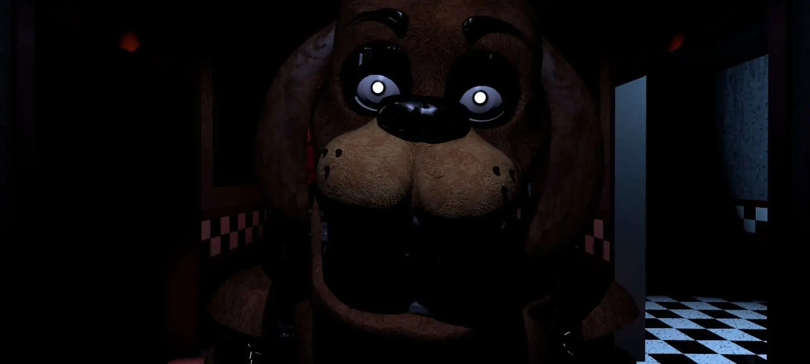
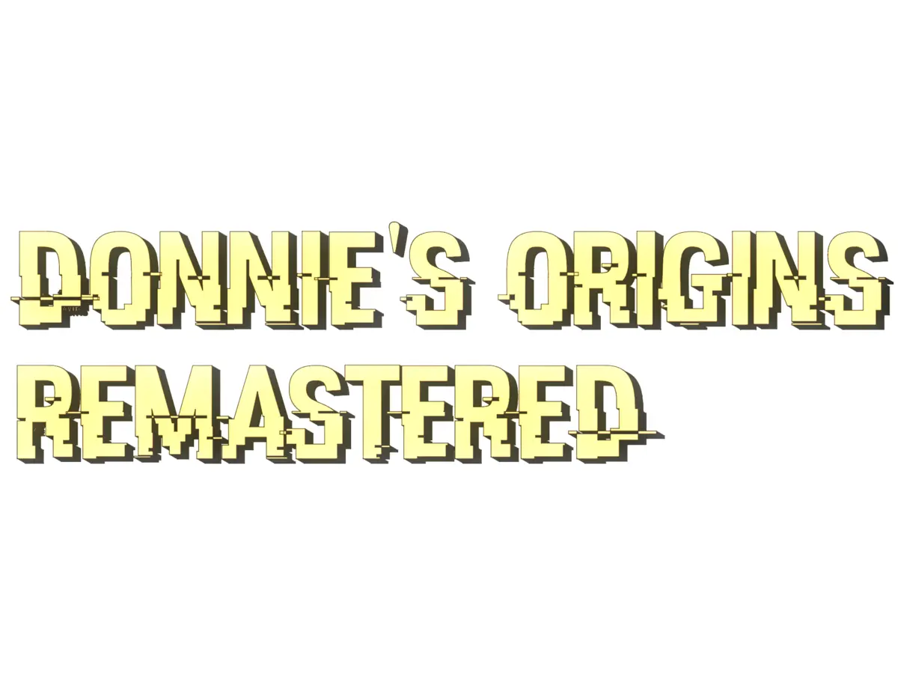
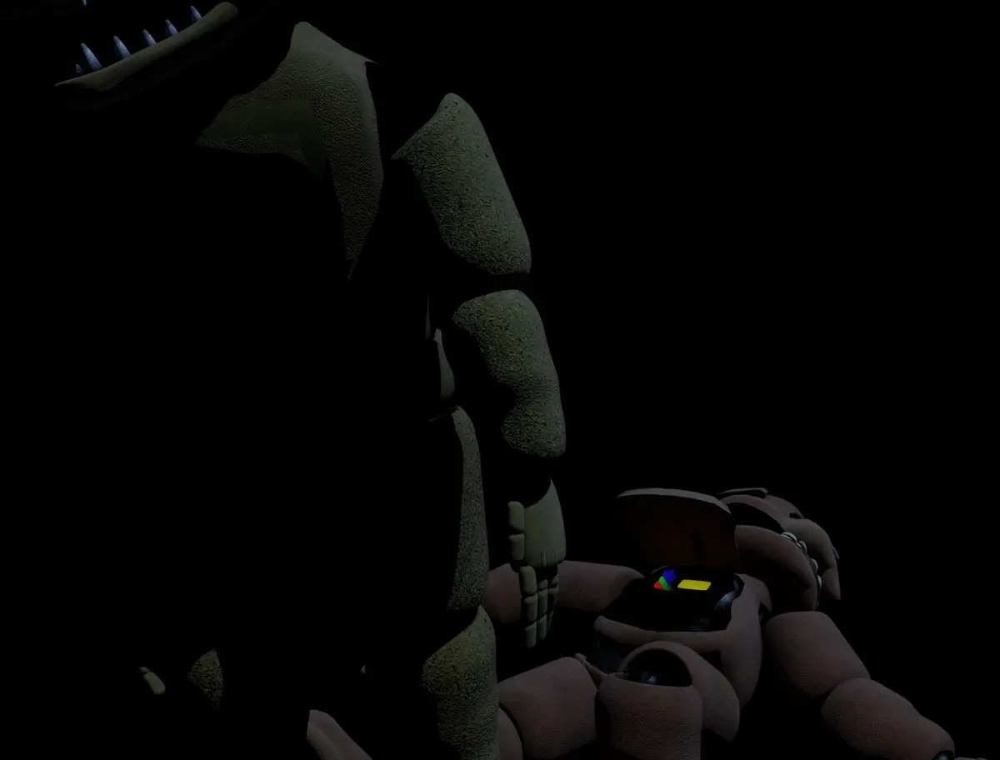
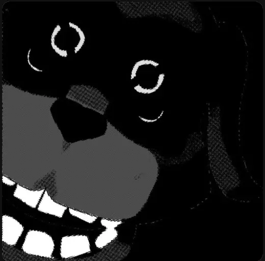

____ __ _____
/\ _`\ __ /\ \ /\ __`\ __ __
\ \ \/\ \ ___ ___ ___ /\_\ __\ \/ ____ \ \ \/\ \ _ __ /\_\ __ /\_\ ___ ____
\ \ \ \ \ / __`\ /' _ `\ /' _ `\/\ \ /'__`\/ /',__\ \ \ \ \ \/\`'__\/\ \ /'_ `\/\ \ /' _ `\ /',__\
\ \ \_\ \/\ \L\ \/\ \/\ \/\ \/\ \ \ \/\ __/ /\__, `\ \ \ \_\ \ \ \/ \ \ \/\ \L\ \ \ \/\ \/\ \/\__, `\
\ \____/\ \____/\ \_\ \_\ \_\ \_\ \_\ \____\ \/\____/ \ \_____\ \_\ \ \_\ \____ \ \_\ \_\ \_\/\____/
\/___/ \/___/ \/_/\/_/\/_/\/_/\/_/\/____/ \/___/ \/_____/\/_/ \/_/\/___L\ \/_/\/_/\/_/\/___/
/\____/
\_/__/
Un fangame de FNaF que empezó en 2021 y no ha parado desde entonces. Una pizzería familiar abandonada desde los 90. Tres animatrónicos que llevan ahí demasiado tiempo. Y una noche que no va a terminar como debería.
¿Qué es esto?
El juego
Survival horror en primera persona. Source SDK 2013 Singleplayer. Donnie's Dinners Place lleva diez años cerrado — los animatrónicos, no. Seis noches, nueve puzzles, un edificio que no quiere que salgas.
El universo
Yellow Springs, Ohio. 2001. AnimaTech Corp construyó los animatrónicos. Bill diseñó el endoesqueleto. Cuatro niños desaparecieron en 1985. El local cerró en 1991 — y lleva años sin abrir.
El tono
Referentes: Dormitabis, FNAF 1–4, Half-Life 2. No es gore — es peso. Hay lore real detrás de cada sala. Cada cosa tiene una explicación. El horror viene de entender qué pasó aquí, no de jumpscares.
La pregunta
Donnie's Dinners Place lleva más de diez años cerrado. Nadie ha entrado desde entonces. Nadie debería seguir dentro.
El elenco
Tres animatrónicos. Diseñados por AnimaTech Corp para un restaurante familiar. Llevan más de diez años en el local. La pregunta no es si están activos — es qué quieren.
Perro marrón caoba, ojos ámbar. Lento, metódico. Se mueve cuando no lo estás mirando. El primero en activarse.
Coneja rosa salmón, ojos verdes. La más expresiva. El brazo izquierdo sobra 3cm — defecto de fábrica sin corregir. Emite un chirrido periódico cada 8–12s.
Gato negro-gris, ojos morados. Cono visual de 25°, casi sordo. Sprint máximo. Cuando lo escuchas ya es tarde.
La primera noche. El local lleva diez años cerrado. 6 niveles, una hora por nivel. Linterna, puertas, cámaras. Los animatrónicos no deberían estar activos.
Nick despierta en una silla de oficina en el subsuelo. El monitor CRT está apagado. Pulsas E para encenderlo.
> Conectando sensores de presencia........... OK
> Verificando última posición registrada...... FALLO
> Diagnóstico de unidades activas:
[✗] UNIDAD 01 — DONNIE · SIN RESPUESTA
[✗] UNIDAD 02 — LANY · SIN RESPUESTA
[✗] UNIDAD 03 — SHADOW · SIN RESPUESTA
━━━━━━━━━━━━━━━━━━━━━━━━━━━━━━━━━━━━━━━━━━━━━━━
⚠ ALERTA: 3/3 UNIDADES FUERA DE RANGO
RECOMENDACIÓN: EVACUACIÓN INMEDIATA
━━━━━━━━━━━━━━━━━━━━━━━━━━━━━━━━━━━━━━━━━━━━━━━
> Connecting presence sensors............... OK
> Checking last recorded position............ FAIL
> Active unit diagnostics:
[✗] UNIT 01 · DONNIE · NO RESPONSE
[✗] UNIT 02 · LANY · NO RESPONSE
[✗] UNIT 03 · SHADOW · NO RESPONSE
━━━━━━━━━━━━━━━━━━━━━━━━━━━━━━━━━━━━━━━━━━━━━━━
⚠ ALERT: 3/3 UNITS OUT OF RANGE
RECOMMENDATION: EVACUATE IMMEDIATELY
━━━━━━━━━━━━━━━━━━━━━━━━━━━━━━━━━━━━━━━━━━━━━━━
Mecánicas
Gestión de recursos, cámaras B/N con grain de película, puertas por sector. Sin «YOU DIED» — solo estática, y después una foto de cámara de seguridad. 9 puzzles en 6 noches.
Los QTEs no avisan. Sin prompt de botón. Lany te da 3 segundos. Donnie, 5. Shadow, 1.5.
Linterna
Batería limitada en HUD. Única fuente de luz que controlas directamente.
Táser
3 cargas por noche. Neutraliza un animatrónico durante 8 segundos.
Tablet de cámaras
8 cámaras, imagen B/N. No puedes moverte mientras la usas.
Puertas / Generador
Las puertas tienen batería propia: se drena manteniéndolas cerradas. El generador controla las luces — en N4 falla y hay que reiniciarlo en la Sala de Calderas.
WIPs
Cabeza de Donnie — completada
Modelado en Cinema 4D R20. Traje exterior e interior (endosqueleto) terminados. Siguientes: torso, cuerpo completo, articulaciones.




Stack y estado
Motor
Source Engine SDK 2013 Singleplayer + Hammer Editor
3D
Cinema 4D R20 + Blender 3.6 → Crowbar → Source .mdl
Estado actual
Fase de modelado — traje completo de Donnie finalizado (cabeza + torso + cuerpo). Endosqueleto en progreso.
Pendiente
Endosqueleto de Donnie. Modelos del resto del elenco. OST. Mapas del juego.
Seis años, tres cancelaciones, un proyecto que se negó a morir
Todo empezó en Roblox. Para entonces ya conocía FNaF de sobra: gameplays, teorías, animaciones, lo que fuera. Había un juego de morphs y rol llamado Animatronic World que me enganchó especialmente — animatrónicos cuadrados, sí, pero con un sistema de creación de personajes propios sorprendentemente completo: animal, objetos, decoraciones, color, textura, ojos, hasta el gamma. Ahí nació The Dog: un perro azul claro virando a naranja, ojos amarillos, corbata amarilla. Le cogí cariño enseguida y empecé a dibujarlo en todas las gamas de FNaF — classic, toy, withered, nightmare.
Desde 2014 veía animaciones de FNaF hechas en SFM con modelos viejos mezclados con assets de TF2 — algo que sigo mirando hoy. A finales de 2020 descubrí que esas animaciones se hacían con Cinema 4D. Lo pirateé gracias a un tutorial de YouTube y empecé a aprender a animar, al principio con resultados muy cutres, repartido entre un i3 de 5ª generación y un Celeron — tenía dos ordenadores porque mis padres estaban divorciados.
Se me ocurrió llevar mi personaje de Roblox a FNaF de verdad. Lo rebauticé Donnie — Dog + Bonnie, mi animatrónico favorito. El primer modelo era literalmente eso: un Bonnie base con texturas de Help Wanted recoloreadas con tonos de Freddy. Más tarde lo rehíce con texturas del FNaF original y mejores colores, aunque seguía siendo, en el fondo, un recolor.
De ahí salió la idea del fangame: One Night at Donnie's (ONAD). Lo monté en Clickteam Fusion (también pirata), aprendiendo sobre la marcha con tutoriales. Animaciones, más modelos, dibujos — y a finales de 2021, el primer cancelazo: se me formateó el PC y lo perdí todo. Tampoco ayudaba que no le veía futuro ni conseguía mantener el ritmo entre el instituto y el proyecto.
Lo retomé. Remodelé los animatrónicos, mejoré lo que pude y volví a Clickteam, esta vez centrado sobre todo en la historia — llegué a escribir un mini-libro. Pero la historia se repitió: lo tenía todo en un pendrive (el primer AlfyDrive) y volví a cancelarlo.
Cambié el nombre a Donnie's Origins. Dibujos, intentos de modelado que nunca terminaban de salir, miraba otros proyectos, y dedicaba tiempo a LADA, que por entonces era un cómic. Nada llegaba a ningún sitio.
A principios de año me hice una cabeza de cosplay de Donnie y la usé de referencia física para modelarlo en 3D. Modelé a Donnie, a Shadow, a Lany y al resto del reparto, y retomé el proyecto en serio — de vuelta en Clickteam.
SFM había estado presente desde mi infancia, y en 2023 le había metido muchas horas a Garry's Mod. En 2025 dejé Clickteam del todo: me pasé Half-Life 2 entero, me metí de lleno en TF2, y decidí que el motor del juego sería Source.
Y aquí sigo. Dos años sin cancelarlo — el récord del proyecto. Nuevos remodelos, motor ya elegido (Source Engine SDK 2013 + Hammer, pipeline Cinema 4D → Blender → Crowbar → .mdl), historia cerrada. Lo que empezó siendo un FNaF clásico y estático se ha convertido en Donnie's Origins tal como está hoy: freeroam, con puzzles.
It all started on Roblox. By then I already knew FNaF inside out: gameplays, theories, animations, whatever I could find. There was a morph/roleplay game called Animatronic World that hooked me especially — square animatronics, sure, but with a surprisingly deep custom-character system: animal, props, decorations, color, texture, eyes, even gamma. That's where The Dog was born: a light blue animatronic dog shifting into orange, yellow eyes, yellow bowtie. I got attached fast and started drawing him across every FNaF generation — classic, toy, withered, nightmare.
I'd been watching FNaF animations made in SFM with old models mixed with TF2 assets since 2014 — something I still do today. In late 2020 I found out those animations were made in Cinema 4D. I pirated it off a YouTube tutorial and started learning to animate, badly at first, split between a 5th-gen i3 and a Celeron — I had two computers because my parents were divorced.
I got the idea to bring my Roblox character into actual FNaF. I renamed him Donnie — Dog + Bonnie, my favorite animatronic. The first model was exactly that: a base Bonnie with Help Wanted textures recolored with Freddy tones. I later redid it with original FNaF textures and better colors, though underneath it was still a recolor.
That's where the fangame idea came from: One Night at Donnie's (ONAD). I built it in Clickteam Fusion (also pirated), learning as I went from tutorials. Animations, more models, drawings — and at the end of 2021, the first cancellation: my PC got wiped and I lost everything. It didn't help that I couldn't see a future in it or keep up the pace alongside school.
I picked it back up. Remodeled the animatronics, improved what I could, and went back to Clickteam — this time focused mostly on the story, to the point of writing a mini-book. History repeated itself: everything was on a flash drive (the first AlfyDrive), and I canceled it again.
I renamed it Donnie's Origins. Drawings, modeling attempts that never quite worked out, looking at other projects, time spent on LADA, which was a comic back then. Nothing went anywhere.
Early in the year I made a cosplay head of Donnie and used it as a physical reference to model him in 3D. I modeled Donnie, Shadow, Lany and the rest of the cast, and picked the project back up for real — still in Clickteam.
SFM had been around since my childhood, and in 2023 I'd put serious hours into Garry's Mod. In 2025 I dropped Clickteam entirely: played through Half-Life 2 start to finish, got deep into TF2, and decided the game's engine would be Source.
And here I still am. Two years without canceling it — a record for this project. New remodels, the engine locked in (Source Engine SDK 2013 + Hammer, Cinema 4D → Blender → Crowbar → .mdl pipeline), the story finished. What started as a static classic FNaF game has become Donnie's Origins as it stands today: freeroam, with puzzles.




